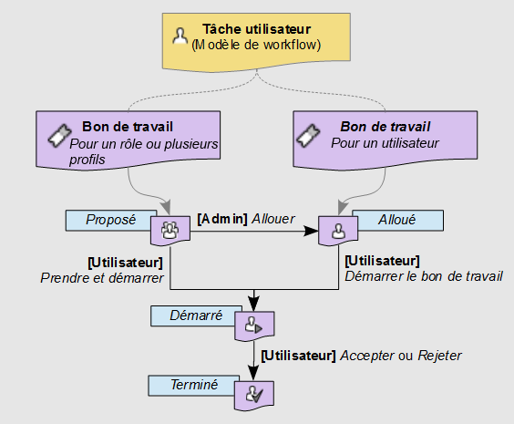
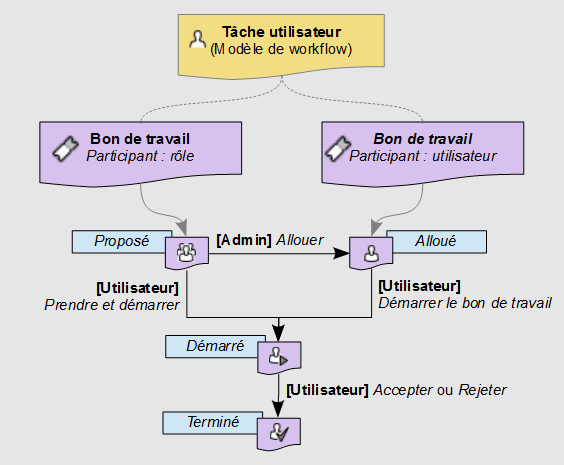

Bons de travail
Présentation des bons de travail
Un bon de travail est une tâche utilisateur unitaire qui doit être effectuée par un utilisateur humain. Par défaut, quand un modèle de workflow définit une tâche utilisateur, les workflows de données, lancés depuis les publications du modèle, génèrent un bon de travail individuel pour chacun des participants listés dans la tâche utilisateur.
Voir aussi
États d'un bon de travail
Lorsqu'un bon de travail est émis, pendant l'exécution d'un workflow de données, pour une tâche utilisateur définie dans le modèle, le bon de travail peut prendre plusieurs états : proposé, alloué, démarré, et terminé.
Création des bons de travail
Mode par défaut
Dans le mode par défaut, un seul bon de travail est généré quelle que soit la liste de profils définis.
Par défaut, si un seul utilisateur est défini dans la liste des profils, le bon de travail créé est à l'état alloué.
Par défaut, dans les autres cas, le bon de travail créé est à l'état proposé.
Note
Le comportement par défaut, décrit ci-dessus, peut être surchargé par une extension programmatique définie dans la tâche utilisateur. Dans ce cas, les bons de travail peuvent être générés programmatiquement, sans se baser obligatoirement sur la liste des profils de la tâche utilisateur.
Mode de compatibilité
Par défaut, pour chaque utilisateur défini comme participant de la tâche utilisateur, le workflow de données crée un bon de travail à l'état alloué.
Par défaut, pour chaque rôle défini comme participant de la tâche utilisateur, le workflow de données crée un bon de travail à l'état proposé.
Note
Le comportement par défaut, décrit ci-dessus, peut être surchargé par une extension programmatique définie dans la tâche utilisateur. Dans ce cas, les bons de travail peuvent être générés programmatiquement, sans se baser obligatoirement sur la liste des participants de la tâche utilisateur.
Variations des états des bons de travail
Lorsque le bon de travail est à l'état alloué, l'utilisateur défini peut directement commencer à travailler sur le bon de travail alloué en effectuant l'action 'Prendre et démarrer'. Le bon de travail passe alors à l'état démarré.
Lorsque le bon de travail est à l'état proposé, tout utilisateur ou tout membre des rôles auxquels il est proposé peut prendre le bon de travail en utilisant l'action 'Prendre et démarrer'. Le bon de travail passe ainsi à l'état démarré.
Avant qu'un utilisateur ait pris le bon de travail proposé, un gestionnaire des allocations du workflow de données peut intervenir pour affecter manuellement le bon de travail à un utilisateur spécifique, passant ainsi le bon de travail à l'état alloué. Puis, lorsque l'utilisateur commence à travailler sur le bon de travail via l'action 'Démarrer le bon de travail', le bon de travail passe à l'état démarré.
Une fois que l'utilisateur, qui a démarré le bon de travail, a réalisé l'action demandée, l'action terminale 'Accepter' ou 'Rejeter' place le bon de travail dans l'état terminé. Lorsqu'un utilisateur termine un bon de travail, le workflow de données passe automatiquement à l'étape suivante définie dans le modèle de workflow.
Diagramme des états de bon de travail
Mode par défaut

Mode de compatibilité

Travail sur un bon de travail en tant que participant
Tous les bons de travail disponibles (qui vous sont soit proposés, soit alloués), sont affichés dans votre boîte de réception des bons de travail. Quand vous commencez à travailler sur un bon de travail, vous pouvez ajouter des commentaires associés qui seront visibles par les administrateurs, les superviseurs du workflow et les autres participants au workflow de données. Tant que vous êtes toujours en train de travailler sur le bon de travail, vous pouvez éditer ce commentaire.
Quand vous avez réalisé toutes les actions demandées par le bon de travail, vous devez signaler la fin du travail en cliquant soit sur le bouton Accepter, soit sur le bouton Rejeter. Les libellés de ces deux boutons peuvent varier en fonction du contexte du bon de travail
Pour suivre l'avancement du workflow de données associé au bon de travail qui vous est destiné dans votre boîte de réception, cliquez sur le bouton "Afficher"  dans la colonne 'Workflow de données' de la table. Une pop-up affichera une vue graphique interactive du workflow de données jusqu'au moment actuel ainsi que les étapes à venir. Vous pouvez visualiser les détails d'une étape en sélectionnant l'étape.
dans la colonne 'Workflow de données' de la table. Une pop-up affichera une vue graphique interactive du workflow de données jusqu'au moment actuel ainsi que les étapes à venir. Vous pouvez visualiser les détails d'une étape en sélectionnant l'étape.
Note
Si vous interrompez la session actuelle pendant un bon de travail, par exemple en fermant le navigateur ou en déconnectant, l'état actuel du bon de travail est préservé. Quand vous revenez sur le bon de travail, il continue à partir du même point.
Priorité de bons de travail
Les bons de travail peuvent porter une priorité, qui peut être utile pour trier et filtrer les bons de travail à compléter. La priorité d'un bon de travail est définie au niveau de son workflow de données, et n'est pas spécifique au bon de travail lui-même. Par conséquent, si le workflow de données est considéré comme urgent, tous les bons de travail ouverts associés sont aussi considérés comme urgent. Par défaut, il y a six niveaux de priorité, de "Très peu prioritaire" à "Urgent". Cependant, la représentation visuelle et le nommage des priorités dépendent de la configuration de votre référentiel TIBCO EBX®.
Voir aussi
Concepts apparentés
 Sommaire du guide utilisateur
Sommaire du guide utilisateur